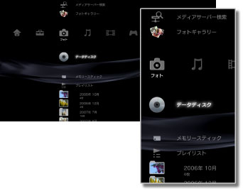

フォト > フォトカテゴリーについて
フォトカテゴリーについて
 （フォト）では、次のアイコンが表示されます。操作状況によって、表示されるアイコンは異なります。
（フォト）では、次のアイコンが表示されます。操作状況によって、表示されるアイコンは異なります。

 |
メディアサーバー検索 | ネットワークで接続されているDLNAサーバーを検索することができます。 |
|---|---|---|
 |
フォトギャラリー | PS3™の本体ストレージに保存された写真をより楽しく見るためのアプリケーションです。 |
 |
スクリーンショットの保存 | PlayStation®3規格ソフトウェアのゲーム中にゲームのスクリーンショットを保存することができます。対応したゲームを起動しているときだけ表示されます。 |
 |
メディアサーバー | DLNAサーバーに接続して、保存されている画像を見ることができます。DLNAサーバーによってアイコンが異なります。 |
  |
データディスク | CD-RやDVD-Rなどに保存された画像を見ることができます。 |
 |
メモリースティック™ | メモリースティック™に保存された画像を見ることができます。* |
 |
SDメモリーカード | SDメモリーカードに保存された画像を見ることができます。* |
 |
コンパクトフラッシュ® | コンパクトフラッシュ®に保存された画像を見ることができます。* |
 |
PSP™（PlayStation®Portable） | PSP™のメモリースティック™に保存された画像を見ることができます。 |
 |
PSP™（PlayStation®Portable） | PSP™goの本体メモリーに保存された画像を見ることができます。 |
 |
デジタルカメラ | PS3™に対応したデジタルカメラに保存された画像を見ることができます。 |
 |
WALKMAN®／ATRAC Audio Device（WALKMAN®） | WALKMAN®／ATRAC Audio Device（WALKMAN®）に保存された画像を見ることができます。 |
 |
ATRAC Audio Device | ATRAC Audio Deviceに保存された画像を見ることができます。 |
 |
USB機器 | USBマスストレージ機器に保存された画像を見ることができます。 |
 |
プレイリスト | プレイリストを作成したり、作成したプレイリストを編集／再生したりすることができます。 |
 |
デジタルカメラ画像 | デジタルカメラの［DCIM］フォルダーに保存された画像を見ることができます。 |
|
（フォルダー） | 記録メディアにパソコンで作成したフォルダーがあるときに表示されます。 |
 |
（本体ストレージに保存された画像） | PS3™の本体ストレージに保存された画像を見ることができます。縮小された画像（サムネイル）が表示されます。 |
| * |
お使いのPS3™によっては、記録メディアを使うときに別売りのUSBアダプターなどが必要になる場合があります。USBアダプターを使ったときは、 |
|---|
 （USB機器）として表示されます。
（USB機器）として表示されます。ヒント
- DLNAについて詳しくは、
 （設定）＞
（設定）＞ （ネットワーク設定）＞［メディアサーバー接続］をご覧ください。
（ネットワーク設定）＞［メディアサーバー接続］をご覧ください。 - ディスクや記録メディアなどの種類によっては、PS3™で正しく認識されない場合があります。
- 3D写真を見るには、3D規格に準拠した3Dテレビ、およびハイスピード規格に対応したHDMIケーブルが必要です。